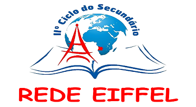
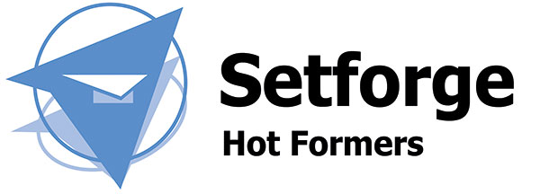
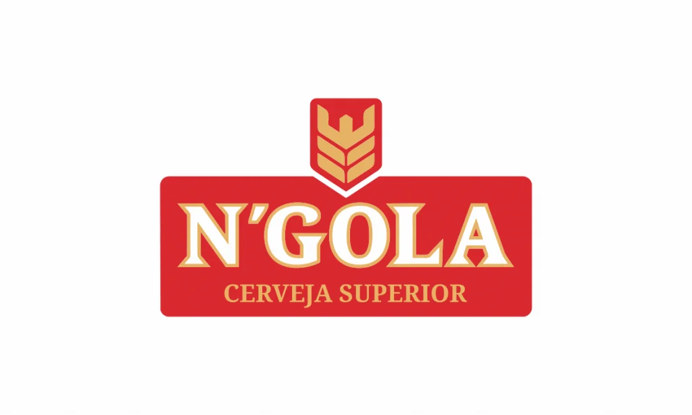

Présentation du site
Bienvenue sur mon site web, une vitrine personnelle entièrement dédiée à la présentation de mon parcours professionnel. Je m'appelle Shelsio Saviola Manico Jacinto, j’ai 21 ans et je suis actuellement étudiant. À travers ce site, j’ai souhaité rassembler de manière claire et détaillée l’ensemble des étapes qui ont jalonné mon développement académique et professionnel. Vous y découvrirez mes formations, accompagnées de projets concrets que j’ai réalisés pour illustrer les compétences acquises au fil du temps. Le site présente également mes compétences techniques et personnelles, les langues que je parle, ainsi que mes expériences professionnelles. Enfin, une section est dédiée à mes loisirs, afin de vous offrir un aperçu plus complet de ma personnalité et de mes centres d’intérêt. Ce site est conçu comme un espace vivant et évolutif, à l’image de mon parcours et de mes ambitions.
Formation
Génie Industriel 4.0
Présentation GI
Depuis 2024, j’ai intégré le cycle ingénieur en Génie Industriel 4.0 à l’École Nationale Supérieure d’Ingénieurs de Bretagne Sud (ENSIBS), située à Lorient. Cette formation, accréditée par la Commission des Titres d’Ingénieur, se distingue par son approche innovante qui allie les fondamentaux du génie industriel aux technologies émergentes de l’industrie du futur. Elle vise à former des ingénieurs capables de concevoir, piloter et optimiser des systèmes de production intelligents, en intégrant des outils numériques avancés tels que l’Internet des objets, la réalité augmentée, les jumeaux numériques et l’intelligence artificielle. Le programme met également l’accent sur la transformation digitale des entreprises, la gestion de projets complexes et l’amélioration continue des processus industriels. Grâce à des enseignements théoriques solides, des projets concrets et des stages en entreprise, cette formation me permet de développer des compétences techniques et managériales essentielles pour répondre aux défis de l’industrie 4.0.
Vous trouverez plus d'informations sur la formation ici : site ensibs GI
Génie Mécanique et Productique
Présentation du département
Entre 2022 et 2024, j'ai suivi le Bachelor Universitaire de Technologie (BUT) en Génie Mécanique et Productique (GMP) à l'IUT de Metz, composante de l'Université de Lorraine. Cette formation m'a permis d'acquérir des compétences solides en conception, industrialisation et organisation industrielle, couvrant l'ensemble du cycle de vie d'un produit. Au cours de la première année, j'ai développé des compétences fondamentales telles que la détermination des exigences technico-économiques à partir des besoins clients, la recherche de solutions optimales, la concrétisation de solutions techniques retenues et la gestion du cycle de vie des produits et des systèmes de production. En deuxième année, j'ai choisi le parcours Innovation pour l'Industrie (2I), axé sur la maîtrise des outils et démarches de créativité, d'aide à l'innovation et de propriété industrielle. Ce parcours m'a préparé à des métiers tels que technicien avant-projet en R&D, assistant designer ou encore assistant en veille technologique. Cette formation, alliant enseignements théoriques et projets pratiques, m'a permis de développer une approche globale de l'ingénierie mécanique, en intégrant les enjeux de l'industrie du futur.
Quelques projets réalisés :
Sciences Physiques et Biologiques
Entre 2018 et 2021, j'ai poursuivi mes études secondaires au Lycée Eiffel d'Ondjiva, situé dans la province du Cunene, en Angola. Cet établissement fait partie de la Rede Eiffel, un réseau de lycées scientifiques publics bilingues, né d'un partenariat entre le ministère angolais de l'Éducation, l'entreprise TotalEnergies, la Mission laïque française et l'Ambassade de France en Angola . Le Lycée Eiffel d'Ondjiva, créé en 2009, propose un enseignement renforcé en sciences (mathématiques, physique, chimie) et en langues étrangères, notamment le français et l'anglais, tout en suivant le programme national angolais. Grâce à cette formation exigeante, j'ai acquis des compétences solides en sciences et en langues, ce qui m'a permis de développer une rigueur académique et une ouverture internationale, essentielles pour la suite de mon parcours.
Vous trouverez plus d'informations sur le réseau Eiffel ici : site réseau Eiffel
Langues
Survolez les images avec votre curseur pour découvrir mon niveau dans chaque langue.

Compétences
Voici toutes mes compétences acquises depuis mon Bac+1:
Programmation: Julia, Python, VBA
CAO : Solidworks, Catia V5
Impression 3D
Métrologie
Usinage: tournage et fraisage
Soudage: oxyacetylène, MIG-MAG
Automatisme industriel
Connaissances en gestion de projet/analyse de données
Logistique : gestion des stocks, ordonnancement, analyse des flux
Ergonomie
Amélioration continue: PDCA, A3, 5S, diagramme d’Ishikawa
Pack Office : Word, Excel, PowerPoint
Soft Skills
Travail en équipe
Capacité d'analyse
Force de proposition
Organisation
Rigueur
Autonomie
Expérience Professionnelle
Stage chez Setforge Hotformers (01-2024/03-2024)
Au cours de mon expérience, j’ai été amené à participer activement à plusieurs missions clés au sein de l’entreprise, chacune apportant une réelle valeur ajoutée à mes compétences professionnelles et à la structure elle-même.
Tout d’abord, j’ai contribué à la formation des opérateurs à l’utilisation d’un ERP (Enterprise Resource Planning). Cette mission m’a permis d’assurer l’accompagnement des équipes de production dans la prise en main de l’outil numérique centralisé de gestion des ressources de l’entreprise. J’ai veillé à ce que chaque opérateur comprenne le fonctionnement du système, notamment la saisie des données, le suivi des ordres de fabrication, la gestion des stocks et la traçabilité des opérations. Cette formation avait pour objectif d’améliorer l’autonomie des utilisateurs et de garantir une utilisation fluide et efficace de l’ERP dans leurs tâches quotidiennes.
Ensuite, j’ai été chargé de la mise à jour et de l’actualisation de la base de données de l’entreprise. Ce travail rigoureux consistait à vérifier, corriger et compléter les informations relatives aux articles, fournisseurs, gammes de fabrication, nomenclatures et autres éléments techniques et logistiques. Cette tâche m’a permis de renforcer mes compétences en gestion de données industrielles tout en contribuant à fiabiliser les informations utilisées par l’ERP et à améliorer la qualité des processus décisionnels au sein de l’entreprise.
Enfin, j’ai participé au contrôle de conformité des couronnes de pont, une activité essentielle pour assurer la qualité des produits avant leur livraison. Cette mission impliquait l’utilisation d’instruments de mesure et de procédures de contrôle rigoureuses afin de vérifier que chaque pièce respecte les exigences techniques et les tolérances définies dans le cahier des charges. À travers cette activité, j’ai pu développer une grande attention aux détails, une rigueur métrologique, ainsi qu’un sens des responsabilités accru face aux enjeux de qualité dans un environnement industriel.
Pour en savoir plus, cliquez ici :
Stage chez ECN-CCBSA (07-2023/08-2023)
Lors de cette expérience professionnelle, j’ai eu l’opportunité de contribuer à diverses missions techniques et organisationnelles, me permettant de consolider mes compétences dans le domaine de la maintenance industrielle et de la production mécanique. L’une de mes responsabilités principales était l’utilisation d’une GMAO (Gestion de la Maintenance Assistée par Ordinateur), en l’occurrence le logiciel Dimo Maint. Grâce à cet outil, j’ai pu gérer efficacement les interventions de maintenance, en planifiant les opérations, en enregistrant les historiques d’intervention et en assurant le suivi des équipements. Cette expérience m’a permis de mieux comprendre l’importance de la traçabilité et de la gestion préventive pour garantir la disponibilité des machines et optimiser leur durée de vie.
En parallèle, j’ai participé à la réalisation de maintenances correctives, consistant à intervenir sur des équipements en panne ou défaillants. J’ai ainsi été confronté à l’analyse rapide de situations imprévues, à la recherche de causes de dysfonctionnement, ainsi qu’à la mise en œuvre de solutions techniques pour remettre les installations en état de fonctionnement dans les meilleurs délais. Ces interventions m’ont appris à être réactif, méthodique et rigoureux, tout en respectant les règles de sécurité. J’ai également été impliqué dans des opérations d’usinage, plus particulièrement en tournage, sur machines-outils conventionnelles ou à commande numérique. Ces tâches m’ont permis de développer ma précision, ma compréhension des plans techniques, ainsi que mes compétences dans la réalisation de pièces mécaniques conformes aux tolérances spécifiées.
Enfin, j’ai pris part à des actions d’amélioration continue, notamment à travers la méthode 5S, qui vise à optimiser l’organisation, la propreté et la sécurité des postes de travail. Cette démarche m’a sensibilisé à l’importance de la qualité environnementale dans un atelier de production, ainsi qu’à la culture d’amélioration permanente qui favorise l’efficacité collective et la réduction des pertes.
Loisirs